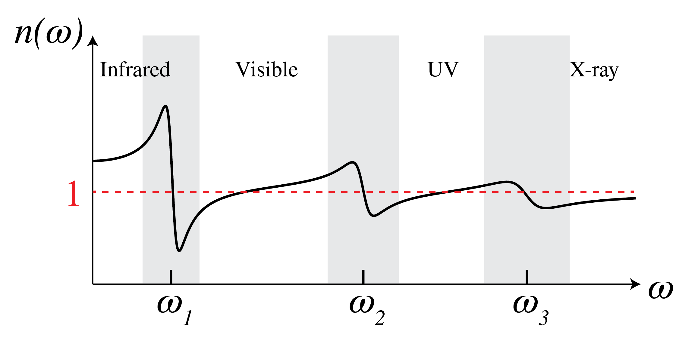

The Lorentz Model for Material Dispersion#
The Lorentz model, which we already mentioned in Maxwell Equations, leads to a dispersion relation for the susceptibility and hence for the permittivity given by
with
where \(N\) is the number density of electrons, \(q_e\) and \(m_e\) are the charge and mass of the electron, \(\omega_j\) are resonance frequencies of atoms or molecules of the material, \(\gamma_j>0\) is a damping term and \(f_j\) are weighting factors (so-called oscillator strengths) satisfying: \(\sum_j f_j=1\). The refractive index is the square root of the permittivity: \(n=\sqrt{\epsilon}\) and its real part is shown in Fig. 147. For dilute gases, \(N\) is small and hence \(q\) is small compared to 1. Then the permittivity becomes equal to

Fig. 147 Refractive index as function of frequency.#
The resonances corresponding to transitions from a lower to a higher energy level of electrons that are in the inner shells of an atom, typically are in the x-ray region, whereas transitions of valence electrons can be in the ultra-violet to the visible. Resonances of relative motions of atoms inside a molecule are often in the infrared. At a resonance, the atom absorbs a photon of energy \(\hbar \omega\) equal to the difference between the energy levels. The material is then absorbing and this corresponds to a permittivity with positive imaginary part. In between the resonances, the absorption is low so that the imaginary part of the permittivity is almost zero while its real part is slowly increasing with frequency (this is called “normal” dispersion). Close to a resonance, the real part of the permittivity is quickly decreasing with frequency (abnormal dispersion).